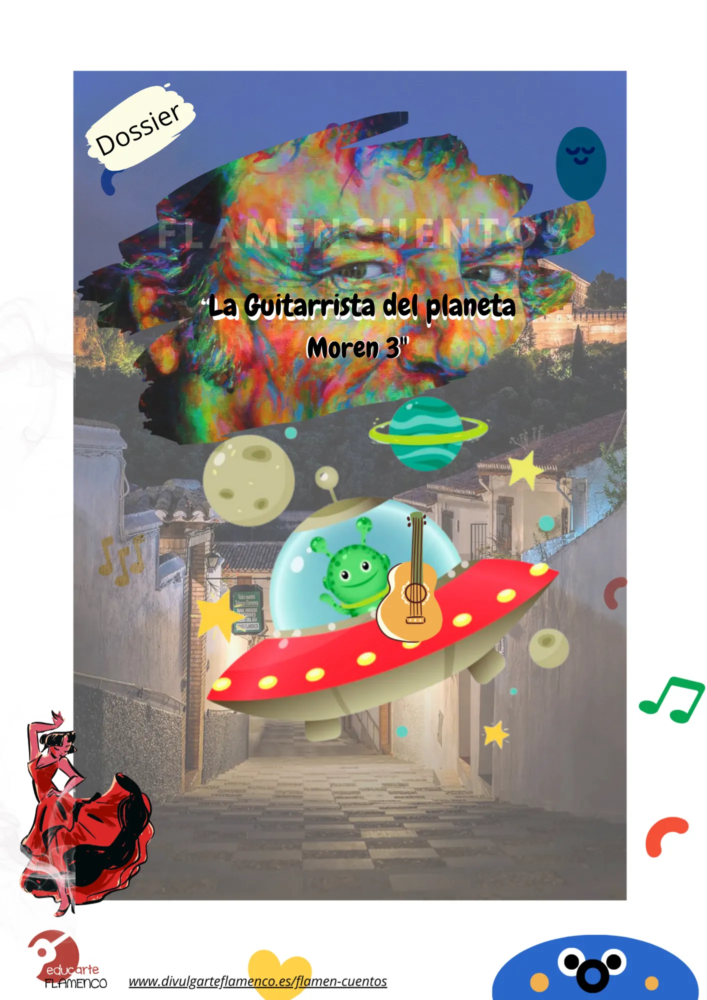
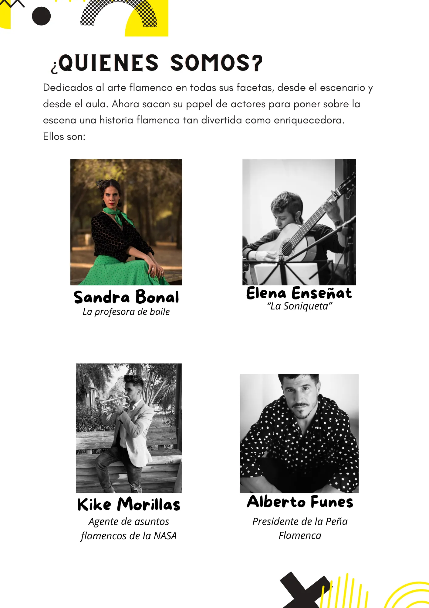
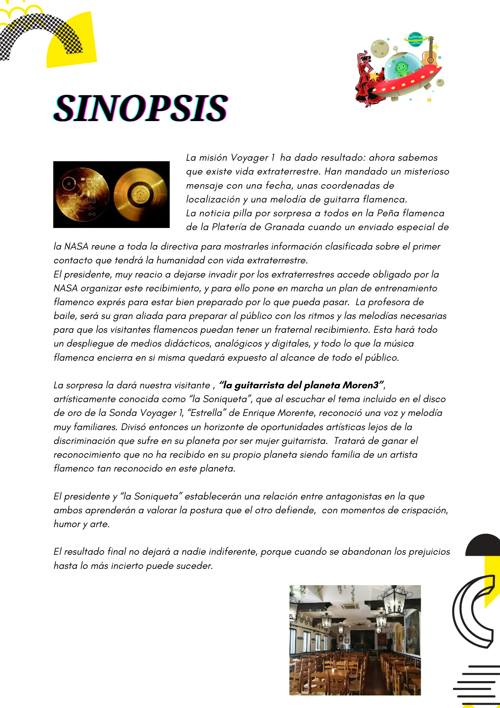

FLAMENCUENTO
"LA GUITARRISTA DEL PLANETA MOREN3"
Te presentamos nuestra nueva aventura
GAMIFICAMOS LO SOLEMNE
El flamenco siendo Patrimonio Inmaterial de la humanidad ha de ser accesible a todo aquel que se acerca, bien por pura afición o por una clara vocación artística. Creo por lo tanto, que este acercamiento ha de producirse de una forma honesta y simplificada, lejos de estereotipos, de fábulas y solemnidades. Además, este acercamiento ha de ser significativo, teniendo en cuenta el contexto en el que se desarrolla y las características que definen a los que se acercan.
Imágenes y materiales del proyecto


